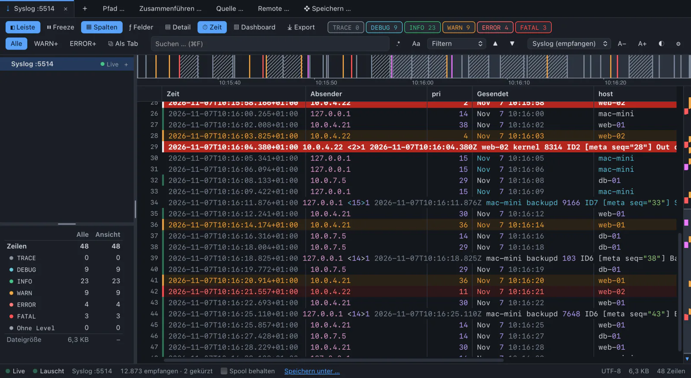
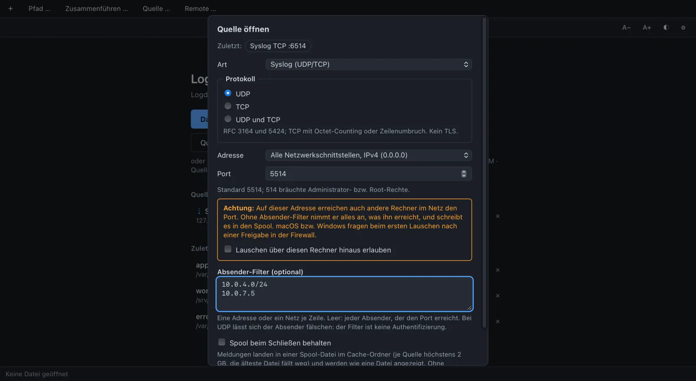
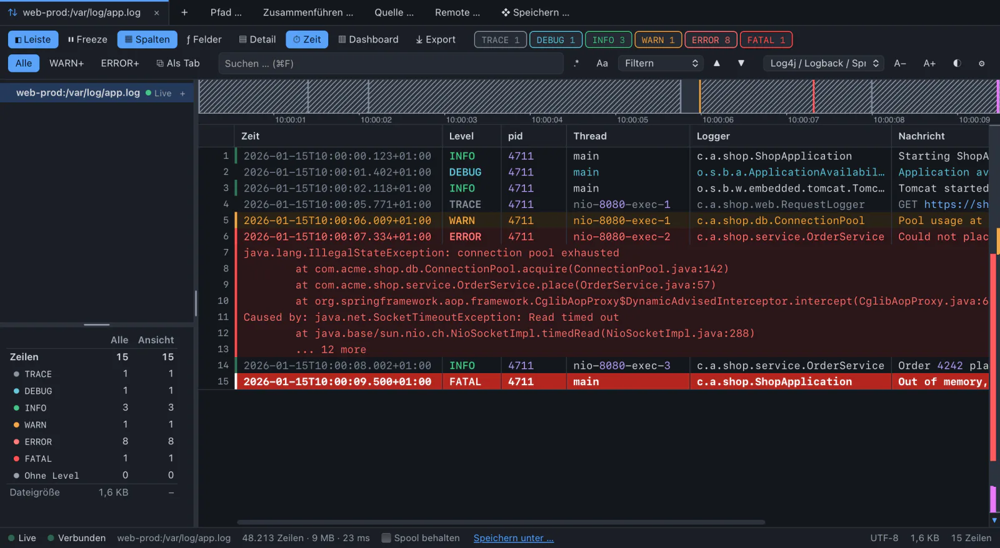
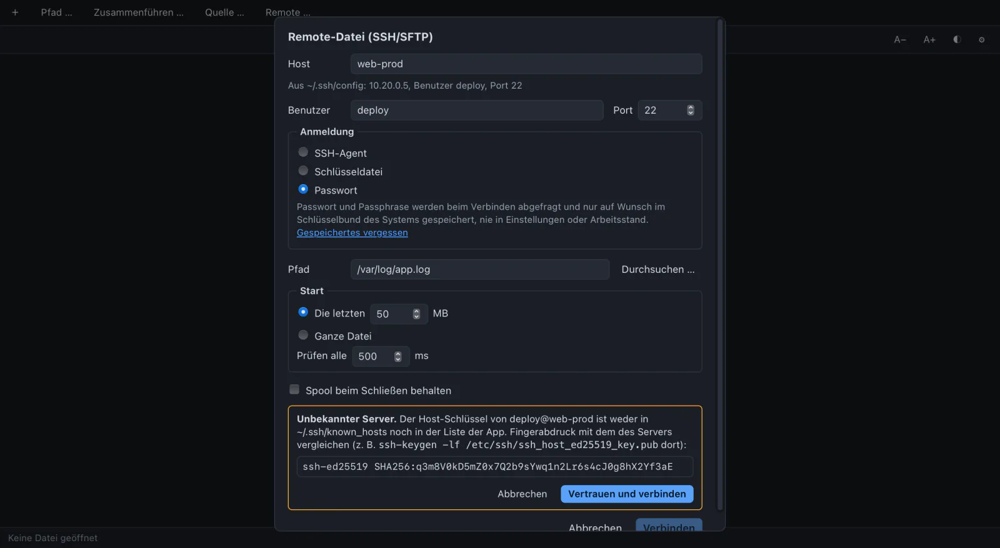
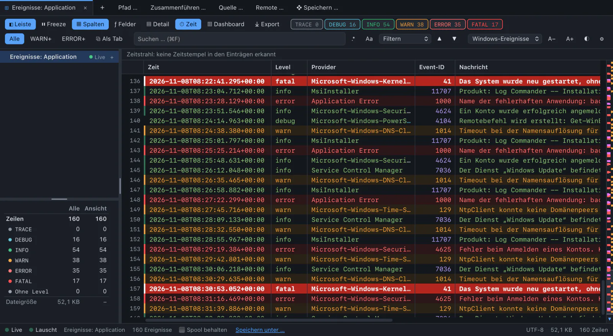
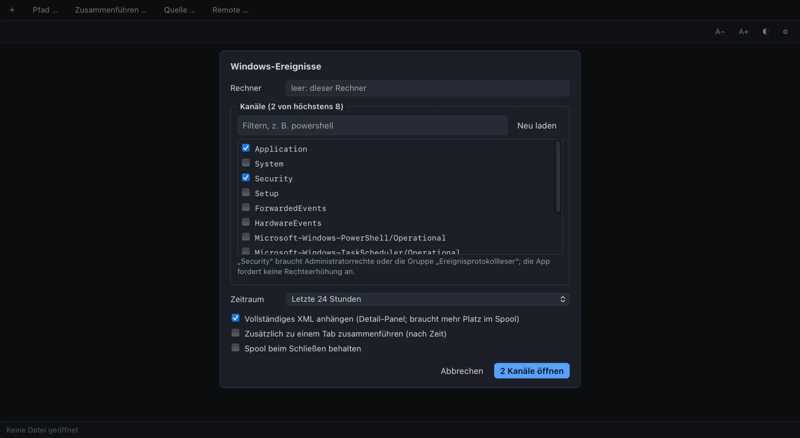
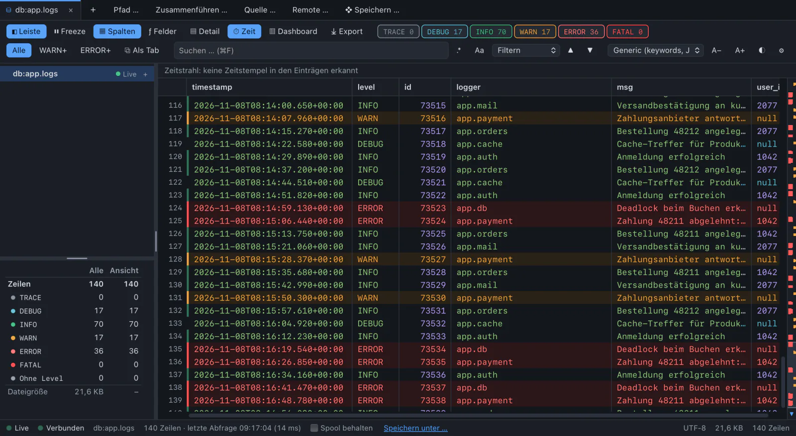
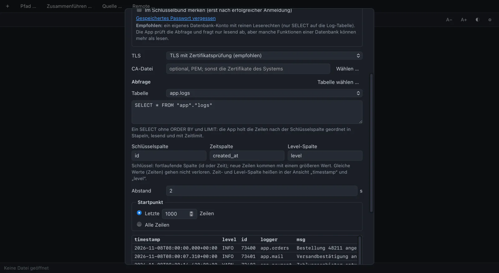

It cannot fill your disk
A spool is at most 2 GB per source by default (64 MB to 8 GB), split into files of 256 MB. Beyond it the oldest file goes.
WARN sources
Receive syslog, follow a file on a server, watch Windows events, tail a database table. Each one arrives as lines in a tab, with everything a file has: filters, search, freeze, columns, timeline, dashboard, export, and a merge with a local file by time.
INFO one read path for everything
A source writes its lines into a spool file in the app’s cache folder. The tab tails that file like any log. Nothing in the index, the filters or the dashboard knows the difference.
A spool is at most 2 GB per source by default (64 MB to 8 GB), split into files of 256 MB. Beyond it the oldest file goes.
Control characters, bidi marks and line separators are escaped before a line reaches the spool. One message is one unambiguous line.
Sources are remembered and saved in workspaces without secrets. A workspace never connects by itself.
WARN ⇣ Syslog :5514
UDP and TCP, RFC 3164 and 5424.
Open a listener and watch what arrives. Each message becomes one line: time of receipt, sender, the message as received. The priority gives the level.
TCP speaks RFC 6587 with octet counting and newline framing. The status bar shows the state and counters: received, dropped, cut, refused.
Measured: 100,000 messages per second over UDP without loss, about 0.1 s from receipt to the index.


INFO ⇅ host:/var/log/app.log
Follow a log on a Linux server, live.
Pick a host (the ones in ~/.ssh/config are offered), log in with the SSH agent, a key file or a password, and browse to the file. Start with the last 50 MB or the whole file.
Rotation and truncation on the server are recognised. A broken connection is tried again after 1, 2, 4 … 60 s and continues where it stopped. Several files of one server share one connection.


FATAL Application · System · Security
Live, instead of the slow Event Viewer.
Any channel of this computer or of another one. First the events of a period (24 hours by default), then a subscription for new ones. After a broken connection it goes on at the bookmark, without gap or doubles.
Each event becomes one JSON line with time, level, provider, event ID and message, so everything works as for any JSON log. Critical is FATAL, audit failure is ERROR. Right click “same event ID” filters on the ID.
Only on Windows. On macOS and Linux this source does not appear.


DEBUG db:public.app_log
A SELECT that keeps running.
PostgreSQL, MySQL and MariaDB, SQL Server or a SQLite file. “Choose table” writes the query, “Preview” shows the first 20 rows as they will arrive.
Rows come in order of a key column, an id or a time: first the last 1000, then every 2 seconds the new ones. Rows with the same key are neither lost nor doubled.
Each row becomes one JSON line. Times in ISO 8601, numbers as numbers.


ERROR refused: host key changed
A listener takes data from outside. SSH and databases touch credentials and other people’s servers. This is what the app does about it.
127.0.0.1, port 5514. Listening on all interfaces needs an explicit tick, and the dialog warns that other computers can then reach the port.10.0.0.0/8. It is no authentication for UDP, sender addresses can be forged.~/.ssh/known_hosts (only read, never written) and the app’s own list. An unknown key is shown with type and SHA256 fingerprint. A changed or revoked key ends the connection. There is no “connect anyway”.~/.ssh/config: Host, HostName, User, Port, IdentityFile and Include are read. ProxyCommand and its relatives are never run.Use a read-only database account. Give Log Commander its own user with SELECT on the log table and nothing else. The checks below are a second line, not a replacement: a read-only transaction does not stop SELECT … INTO OUTFILE for an account that has that right.
A .lcw file is checked field by field and never runs anything. Remote files, databases and listeners beyond this computer are listed unticked in the confirmation, a database with its query. Passwords and host keys are always asked for in the dialog.
$ echo '<11>test' | nc -u -w0 127.0.0.1 5514